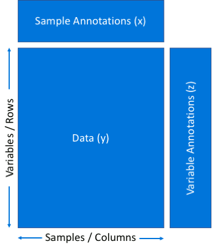
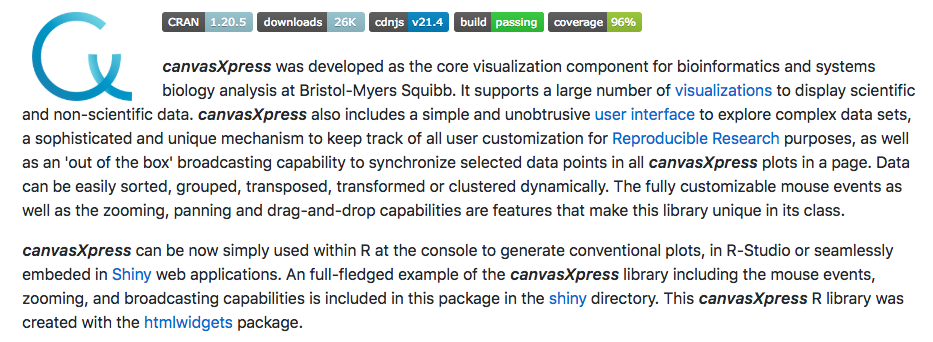
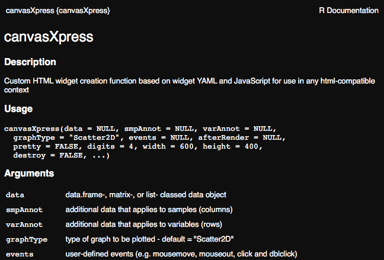
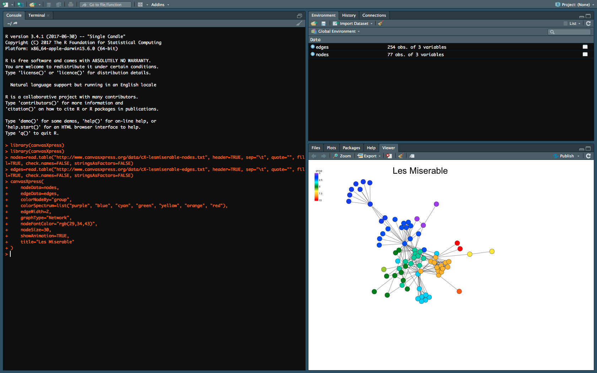
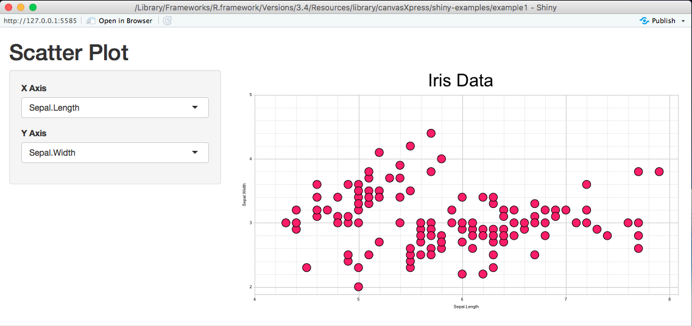
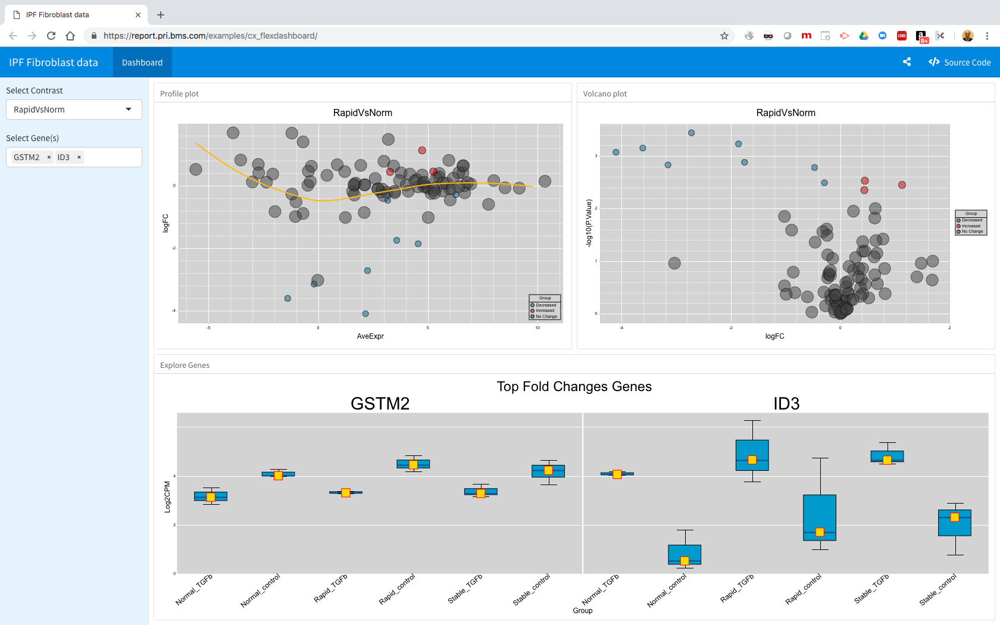

Open source JavaScript library
Used in a web environment or as an R package
Support for many standard data formats
Rich user interfaces to customize visualization
Built with Reproducible Research in mind
Simple turn-key app to plug in data sets
Unobtrusive and rich user interfaces
Able to handle a million data points
<html>
<head>
<link rel="stylesheet" href="path-to-canvasXpress.css" type="text/css"/>
<script type="text/javascript" src="path-to-canvasXpress.min.js"></script>
<script>
onReady(function () {
var cX = new CanvasXpress({
"renderTo": "canvasId",
"data": {
"y": {
"vars": [ "Gene1"],
"smps": [ "Smp1", "Smp2", "Smp3" ],
"data": [ [ 10, 35, 88 ] ]
}
},
"conf": {
"graphType": "Bar"
}
});
});
</script>
</head>
<body>
<canvas id="canvasId" width="540" height="540"></canvas>
</body>
</html>

Each container is a data frame (like in R)
{
"y": {
"vars": [ "Variable1" ],
"smps": [ "Sample1", "Sample2", "Sample3" ],
"data": [ [ 10, 20, 30 ] ]
},
"x": {
"Tissue": [ "Kidney", "Lung", "Heart" ],
"Donor": [ "D1", "D1", "D2" ]
},
"z": {
"Symbol": [ "AAA" ],
"Pathway": [ "P1" ]
}
}
{
"y": {
"vars": [ "Variable1", "Variable2" ],
"smps": [ "Sample1", "Sample2", "Sample3" ],
"data": [ [ 10, 20, 30 ],
[ 35, 25, 15 ] ]
},
"x": {
"Tissue": [ "Kidney", "Lung", "Heart" ],
"Donor": [ "D1", "D1", "D2" ]
},
"z": {
"Symbol": [ "AAA", "BBB" ],
"Pathway": [ "P1", "P2" ]
}
}

canvasXpress is available for installation from CRAN or you can install the latest version of canvasXpress from GitHub as follows:
devtools::install_github('neuhausi/canvasXpress')
#List all package vignettes
vignette(package = "canvasXpress")
#View a specific vignette
vignette("getting_started", package = "canvasXpress")
vignette("additional_examples", package = "canvasXpress")
#List example names
cxShinyExample()
#Run an interactive shiny example
cxShinyExample(example = "example1")

data <- t(iris[,1:4])
varAnnot <- as.matrix(iris[,5])
colnames(varAnnot) <- "Species"
canvasXpress(t(data), varAnnot=varAnnot, scatterPlotMatrix=1, colorBy="Species")


library(shiny)
library(htmlwidgets)
library(canvasXpress)
shinyServer(function(input, output, session) {
# Combine the selected variables into a new data frame
selectedData = reactive({
iris[, c(input$xAxis, input$yAxis)]
})
output$plot = renderCanvasXpress({
smpAnnot = as.matrix(iris[,5])
colnames(smpAnnot) = "Species"
canvasXpress(selectedData(), graphType="Scatter2D", width=500, height=500, title="Iris Data")
})
})
library(shiny)
library(htmlwidgets)
library(canvasXpress)
shinyUI(pageWithSidebar(
headerPanel("Scatter Plot"),
sidebarPanel(
selectInput("xAxis", "X Axis", names(iris)[1:4]),
selectInput("yAxis", "Y Axis", names(iris)[1:4], selected=names(iris)[[2]])
),
mainPanel(
canvasXpressOutput("plot")
)
))

Some Markup Code
---
title: "IPF Fibroblast data"
output:
flexdashboard::flex_dashboard:
orientation: rows
social: menu
source_code: embed
css: styles.css
runtime: shiny
---
```{r setup, include=FALSE}
library(knitr)
library(flexdashboard)
library(htmlwidgets)
library(canvasXpress)
library(dplyr)
source("supporting_plots.R")
loadData = function(filename) {
exData = readRDS(filename)
# format gene names: remove first underscore and all characters after that
gsub_expression = "_.*"
rownames(exData$Log2CPM) = gsub(gsub_expression, "", rownames(exData$Log2CPM))
exData$contrasts = lapply(exData$contrasts, FUN = function(x) {
rownames(x) = gsub(gsub_expression, "", rownames(x))
return(x)
})
exData
}
# load and prep the data
exData = loadData("data.rds")
gene_list = rownames(exData$contrasts[[1]])
```
Sidebar {.sidebar}
======================================================================
```{r}
selectizeInput("contrast", "Select Contrast", names(exData$contrasts))
selectizeInput("genes", "Select Gene(s)", gene_list, multiple = TRUE, selected = gene_list[1:2],
options = list(placeholder = "Type/Click then Select",
searchField = "value",
plugins = list('remove_button')))
ds1 = reactive({
exData$contrasts[[input$contrast]]
})
```
the rest of the Markup Code
Dashboard
======================================================================
Row {data-height=500}
----------------------------------------------------------------------
### Profile plot
renderCanvasXpress({
pp = ds1()
if (!is.null(pp)) {
profilePlot(pp, title = paste(input$contrast, sep = ""))
} else {
canvasXpress(destroy = TRUE)
}
})
```
### Volcano plot
```{r}
renderCanvasXpress({
vp = ds1()
if (!is.null(vp)) {
volcanoPlot(vp, title = paste(input$contrast, sep = ""))
} else {
canvasXpress(destroy = TRUE)
}
})
```
Row {data-height=500}
----------------------------------------------------------------------
### Explore genes
```{r}
renderCanvasXpress({
sel = input$genes
if (!is.null(sel)) {
dat = exData$Log2CPM
dat = dat[rownames(dat) %in% sel,,drop = FALSE]
des = exData$smpAnnot$ReplicateGroup
genePlot(dat, des, title = "Expression Plot")
} else {
canvasXpress(destroy = TRUE)
}
})
```